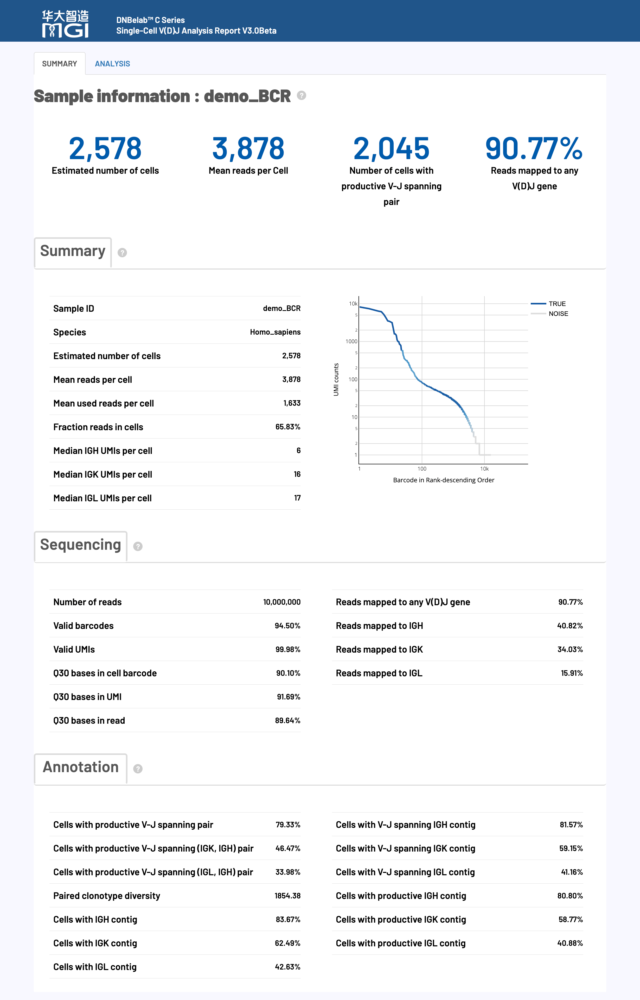
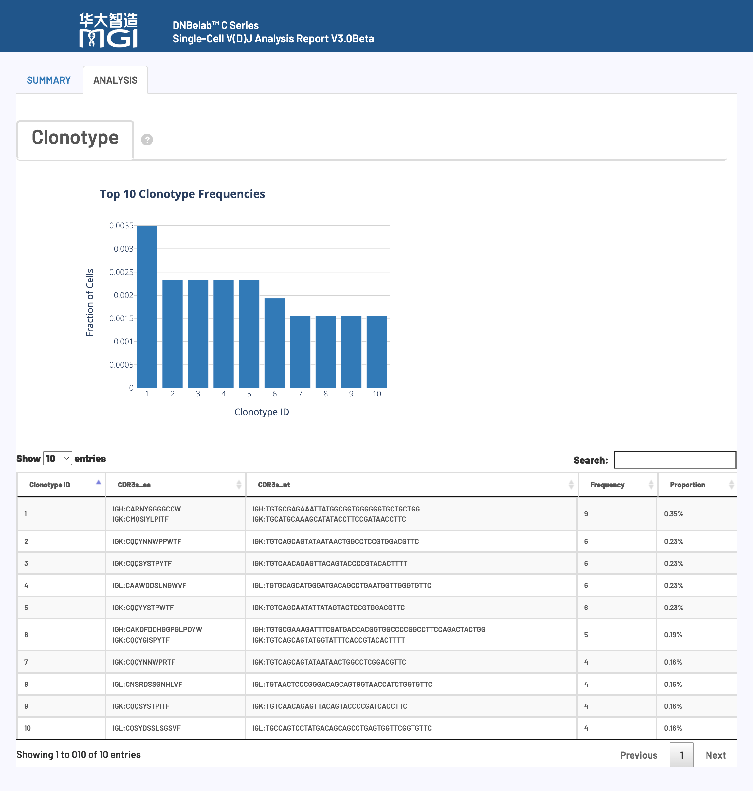

A Complete Guide to Single-Cell V(D)J Sequencing Analysis Output Files
📁 Directory Structure • 📋 File Details • 📊 Analysis Metrics • 📊 Report Interpretation
After the single-cell VDJ analysis is complete, a standardized set of files and subdirectories is generated in the specified output directory, specifically for immune receptor repertoire analysis. This document details the content, format, and purpose of each output file to help users fully understand and efficiently utilize the V(D)J analysis results.
💡 Tip: VDJ analysis requires 5' end RNA sequencing data, and all output files adhere to the AIRR standard and are compatible with mainstream immunoinformatics tools.
⚠️ Prerequisite: 5' end single-cell RNA sequencing analysis must be completed first.
.
├── airr_annotations.tsv # Annotation file in AIRR standard format
├── all_contig_annotations.csv # Annotation information for all assembled sequences
├── all_contig.fasta # FASTA file of all assembled sequences
├── all_contig.fasta.fai # Index file for all assembled sequences
├── clonotypes.csv # Clonotype analysis results
├── consensus_annotations.csv # Annotation information for consensus sequences
├── consensus.fasta # FASTA file of consensus sequences
├── consensus.fasta.fai # Index file for consensus sequences
├── filtered_contig_annotations.csv # Annotation information for filtered assembled sequences
├── filtered_contig.fasta # FASTA file of filtered assembled sequences
├── filtered_contig.fasta.fai # Index file for filtered assembled sequences
├── metrics_summary.xls # Summary of analysis quality metrics
└── *_scVDJ_TR(IG)_report.html # Analysis report in HTML format
🎯 Core Content: Results of V(D)J contig sequence assembly, precise annotation, and quality assessment, covering the complete information of TCR and BCR rearranged sequences.
Diagram of a Typical V(D)J Transcript Structure:
🔍 Explanation of Important Terms:
| Region | Abbreviation | Biological Function |
|---|---|---|
| Untranslated Region | UTR | Regulates mRNA stability and translation efficiency; does not encode protein. |
| Framework Region | FWR | Maintains the conserved structural framework of the immunoglobulin fold. |
| Complementarity Determining Region | CDR | The key variable region that directly contacts the antigen and determines binding specificity. |
🧬 Technical Advantage: The V(D)J analysis pipeline can accurately identify and provide the amino acid and nucleotide sequences of the framework (FWR) and complementarity determining (CDR) regions. All V(D)J annotation information for assembled contigs and clonotype consensus sequences is output in various standard formats.
A contig sequence is identified as a full-length sequence if it meets the following strict conditions simultaneously:
A contig sequence is identified as a productive sequence (i.e., functionally active) if it meets all of the following conditions simultaneously:
🔬 Expected Receptor Configurations for Different Cell Types:
| Cell Type | Standard Receptor Configuration | Biological Significance |
|---|---|---|
| T Cell | 1 productive TRA chain + 1 productive TRB chain | Normal TCR α/β heterodimer |
| B Cell | 1 productive heavy chain + 1 productive light chain (κ or λ) | Normal BCR heavy/light chain pairing |
🤔 Principles for Marking Low-Confidence Sequences:
⚠️ Important Note: The presence of extra productive contigs beyond the normal configuration is typically an anomaly and may arise from:
| Anomaly Type | Cause Analysis |
|---|---|
| Ambient Contamination | Non-specific capture of free-floating mRNA, possibly from external sources or nucleic acids released by apoptotic cells. |
| Doublet Events | Droplets containing multiple cells (doublets), making it impossible to distinguish receptor signals from different cells. |
| Technical Artifacts | Artificial sequences generated during PCR amplification or sequencing, including chimeric sequences or incorrect primer binding. |
📉 Basis for Determining Low-Confidence Sequences:
Contains annotated and consensus sequences of V(D)J rearrangements in the AIRR standard format.
Purpose:
Content and Format:
| Field Name | Detailed Description |
|---|---|
cell_id |
A unique identifier for the cell to which this rearrangement belongs, used for linking single-cell data. |
clone_id |
A clonotype ID that identifies the specific clonal group to which this rearrangement belongs, used for clonotype analysis. |
sequence_id |
The unique name or identifier of the contig (rearranged sequence). |
sequence |
The complete nucleotide sequence of the V(D)J rearrangement, including all variable, diversity, and joining regions. |
sequence_aa |
The amino acid sequence translated from the rearranged region, reflecting the functional protein product. |
productive |
Indicates whether the rearrangement is productive (biologically functional), requiring conditions like in-frame translation and no stop codons. |
rev_comp |
Indicates if the sequence is a reverse complement (default: false), used for sequence orientation marking. |
v_call |
The name of the identified V (variable) gene segment. |
v_cigar |
The CIGAR string for the V gene alignment, recording detailed alignment information (matches, insertions, deletions, etc.). |
d_call |
The name of the identified D (diversity) gene segment (only for heavy and beta chains). |
d_cigar |
The CIGAR string for the D gene alignment, detailing the alignment results of the diversity region. |
j_call |
The name of the identified J (joining) gene segment, a key element for completing V(D)J recombination. |
j_cigar |
The CIGAR string for the J gene alignment, recording precise alignment information of the joining region. |
c_call |
The name of the identified C (constant) gene segment, which determines the functional type of the antibody/receptor. |
c_cigar |
The CIGAR string for the C gene alignment, recording the alignment details of the constant region. |
sequence_alignment |
Detailed alignment result of the V(D)J rearranged region against the reference germline sequence, showing mutations and variations. |
germline_alignment |
Inferred full-length germline sequence alignment result, used for somatic hypermutation analysis. |
junction |
The nucleotide sequence of the V(D)J rearrangement's junction (CDR3 region), which determines antigen-binding specificity. |
junction_aa |
The amino acid sequence of the junction (CDR3 amino acids), the key domain for antigen recognition. |
junction_length |
The length of the CDR3 nucleotide sequence (in bp), which affects antigen-binding affinity and specificity. |
junction_aa_length |
The length of the CDR3 amino acid sequence (in aa), which determines the spatial structure of the antigen-binding loop. |
v_sequence_start |
The start position of the V region in the rearranged sequence (1-based coordinate system). |
v_sequence_end |
The end position of the V region in the rearranged sequence (1-based coordinate system). |
d_sequence_start |
The start position of the D region in the rearranged sequence (1-based coordinate system). |
d_sequence_end |
The end position of the D region in the rearranged sequence (1-based coordinate system). |
j_sequence_start |
The start position of the J region in the rearranged sequence (1-based coordinate system). |
j_sequence_end |
The end position of the J region in the rearranged sequence (1-based coordinate system). |
c_sequence_start |
The start position of the C region in the rearranged sequence (1-based coordinate system). |
c_sequence_end |
The end position of the C region in the rearranged sequence (1-based coordinate system). |
consensus_count |
The total number of reads supporting this rearrangement, reflecting sequencing depth and sequence reliability. |
duplicate_count |
The number of unique UMI molecules supporting this rearrangement, used for deduplication and quantitative analysis. |
is_cell |
Indicates whether this rearrangement originates from a real cell (TRUE: cell; FALSE: background/empty droplet). |
Contains detailed annotation information for all contig sequences (from both cellular and background barcodes).
Purpose:
Content and Format:
| Field Name | Description |
|---|---|
sample |
Sample name of the VDJ library. |
barcode |
The cell ID (or barcode) corresponding to this contig. |
is_cell |
A boolean value indicating if this cell ID was identified as a cell (TRUE for cell, FALSE for background). |
contig_id |
A unique identifier for this contig. |
high_confidence |
A boolean value indicating if this contig was marked as high confidence (not likely to be a chimera or other artifact). |
length |
The nucleotide length of the contig sequence (bp). |
chain |
The chain type associated with this contig: TRA, TRB, IGK, IGL, or IGH. |
v_gene |
The highest-scoring V gene segment, e.g., TRAV1-1. |
d_gene |
The highest-scoring D gene segment, e.g., TRBD1. |
j_gene |
The highest-scoring J gene segment, e.g., TRAJ1-1. |
full_length |
A boolean value indicating if this contig was declared as full-length. |
productive |
A boolean value indicating if this contig was declared as productive. |
fwr1 |
The predicted FWR1 amino acid sequence. |
fwr1_nt |
The predicted FWR1 nucleotide sequence. |
cdr1 |
The predicted CDR1 amino acid sequence. |
cdr1_nt |
The predicted CDR1 nucleotide sequence. |
fwr2 |
The predicted FWR2 amino acid sequence. |
fwr2_nt |
The predicted FWR2 nucleotide sequence. |
cdr2 |
The predicted CDR2 amino acid sequence. |
cdr2_nt |
The predicted CDR2 nucleotide sequence. |
fwr3 |
The predicted FWR3 amino acid sequence. |
fwr3_nt |
The predicted FWR3 nucleotide sequence. |
cdr3 |
The predicted CDR3 amino acid sequence. |
cdr3_nt |
The predicted CDR3 nucleotide sequence. |
fwr4 |
The predicted FWR4 amino acid sequence. |
fwr4_nt |
The predicted FWR4 nucleotide sequence. |
reads |
The number of reads mapped to this contig. |
umis |
The number of distinct UMIs mapped to this contig. |
raw_clonotype_id |
The clonotype ID assigned to this cell barcode. |
raw_consensus_id |
The consensus sequence ID to which this contig was assigned. |
exact_subclonotype_id |
The exact subclonotype ID to which this cell barcode was assigned. |
Contains the nucleotide sequences of all assembled contigs.
A high-quality subset of all_contig_annotations.csv, containing only the annotation results for high-confidence contigs derived from cells.
all_contig_annotations.csv.A high-quality subset of all_contig.fasta, containing only high-quality contig sequences that have passed quality filtering and cell calling.
🎯 Core Content: Precise identification, frequency statistics, and CDR3 sequence diversity analysis of TCR and BCR clonotypes.
A statistical analysis file for clonotypes, providing detailed descriptive information for each unique clonotype.
Purpose:
Content and Format:
| Field Name | Detailed Description |
|---|---|
clonotype_id |
A unique identifier for the clonotype assigned to this consensus sequence, used to link and track all related cells of a specific clonal group. |
frequency |
The absolute number of cells observed with this clonotype, reflecting the degree of clonal expansion and the strength of the immune response. |
proportion |
The relative proportion of cells of this clonotype within the total cell population, used to assess clonal dominance and diversity distribution. |
cdr3s_aa |
A semicolon-separated list of chain:sequence pairs, formatted as "chain_name:CDR3_amino_acid_sequence". Chain names include TRA, TRB, TRG, TRD (for T-cell receptors) and IGK, IGL, IGH (for B-cell receptors). The CDR3 amino acid sequence determines antigen-binding specificity and functional activity. |
cdr3s_nt |
A semicolon-separated list of chain:sequence pairs, formatted as "chain_name:CDR3_nucleotide_sequence". Provides the DNA sequence of the CDR3 region, used for somatic hypermutation analysis, clonal evolution tracking, and molecular marker design. |
Provides detailed annotation information for each clonotype's consensus sequence.
Purpose:
Content and Format:
| Field Name | Description |
|---|---|
clonotype_id |
The clonotype ID assigned to this consensus sequence, corresponding to the clonotype identifier in clonotypes.csv. |
consensus_id |
A unique identifier for this consensus sequence, used to link to the sequence in the FASTA file. |
sample |
Sample name of the VDJ library. |
length |
The nucleotide length of the consensus sequence. |
chain |
The chain type associated with this consensus sequence: TRA, TRB, IGK, IGL, or IGH. |
v_gene |
The highest-scoring V gene segment call. |
d_gene |
The highest-scoring D gene segment call (if applicable). |
j_gene |
The highest-scoring J gene segment call. |
c_gene |
The highest-scoring C gene segment call. |
full_length |
A boolean value indicating if this consensus sequence was declared as full-length. |
productive |
A boolean value indicating if this consensus sequence was declared as productive. |
cdr3 |
The predicted CDR3 amino acid sequence. |
cdr3_nt |
The predicted CDR3 nucleotide sequence. |
reads |
The total number of reads supporting this consensus sequence. |
umis |
The number of distinct UMIs supporting this consensus sequence. |
A FASTA file containing the consensus sequence for each clonotype.
consensus_id.🎯 Core Content: A comprehensive evaluation and summary of statistical metrics for V(D)J assembly quality, providing complete data quality control information.
A summary table of key analysis metrics in Excel format, providing a comprehensive assessment of the overall experiment quality.
Purpose:
Content and Format:
Includes five main categories of key metrics:
| Metric Category | Content Included |
|---|---|
| Basic Statistics | Basic sequencing metrics such as total reads, valid barcode ratio, UMI quality, Q30 base quality, etc. |
| Cell Identification | Cell calling results such as estimated number of cells, fraction of reads in cells, mean reads per cell, etc. |
| Gene Mapping | V(D)J gene mapping ratio, chain-specific mapping statistics, gene usage analysis. |
| Assembly Quality | Assembly effectiveness evaluation such as full-length sequence ratio, productive sequence ratio, CDR3 identification success rate, etc. |
| Clonotype Analysis | Immune repertoire features such as clonotype diversity, pairing success rate, major clonotype frequencies, etc. |
Built-in recommended quality control standards for user convenience:
An interactive comprehensive analysis report in HTML web format.
Purpose:
Content and Format:
🎯 Overview: The HTML web report provides a comprehensive visual display and detailed interpretation of single-cell V(D)J sequencing analysis results, including an evaluation of key performance indicators to help users quickly understand the experimental quality and analysis outcomes.
The HTML web report is a comprehensive platform for displaying single-cell VDJ sequencing analysis, integrating complete results from data quality control to downstream immune repertoire analysis. The report uses an interactive visual design to help users quickly assess experimental quality, understand analysis results, and guide future research directions.
💡 Usage Suggestion: It is recommended to review the metrics in the order they are presented in the report.
Note: The following standards are for reference only. Actual quality assessment should consider multiple factors such as tissue type, cell state, and experimental objectives. Significant differences may exist between samples, so judgment should be based on the specific experimental context.

🎯 Core Function: Cell identification, quality assessment, and immune receptor assembly statistics, providing key indicators of overall experimental effectiveness.
📊 Quality Control Standards:
Note: The following standards are for reference only. Actual quality assessment should consider multiple factors such as tissue type, cell state, and experimental objectives. Significant differences may exist between samples, so judgment should be based on the specific experimental context.
| Metric Name | Recommended | Acceptable | Needs Improvement |
|---|---|---|---|
| Mean reads per cell | ≥ 10,000 | 5,000–10,000 | < 5,000 |
| Fraction of Reads in Cells | ≥ 50% | 20–50% | < 20% |
🔍 Detailed Metric Explanations:
| Metric Name | Detailed Explanation and Technical Requirements |
|---|---|
|
Estimated number of cells |
|
|
Mean reads per cell |
|
|
Fraction of Reads in Cells |
|
|
Median TRA/TRB or IGH/IGK/IGL UMIs per cell |
|
|
Number of cells with TRA/TRB or IGH/IGK/IGL contig |
|
|
Cells with V-J spanning TRA/TRB or IGH/IGK/IGL contig |
|
|
Cells with productive TRA/TRB or IGH/IGK/IGL contig |
|
|
Paired clonotype diversity |
|
🎯 Core Function: Basic quality assessment of sequencing data, including barcode recognition rate, alignment quality, and sequencing accuracy.
📊 Quality Control Standards:
Note: The following standards are for reference only. Actual quality assessment should consider multiple factors such as tissue type, cell state, and experimental objectives. Significant differences may exist between samples, so judgment should be based on the specific experimental context.
| Metric Name | Recommended | Acceptable | Needs Improvement |
|---|---|---|---|
| Valid barcodes | ≥ 80% | 70–80% | < 70% |
| Valid UMIs | ≥ 80% | 70–80% | < 70% |
| Q30 Base Quality | ≥ 85% | 75–85% | < 75% |
🔍 Detailed Metric Explanations:
| Metric Name | Detailed Explanation and Technical Requirements |
|---|---|
|
Valid barcodes |
|
|
Valid UMIs |
|
|
Q30 bases Quality |
|
🎯 Core Function: Evaluation of V(D)J gene enrichment efficiency, reflecting the capture effectiveness of immune receptor sequences.
📊 Quality Control Standards:
Note: The following standards are for reference only. Actual quality assessment should consider multiple factors such as tissue type, cell state, and experimental objectives. Significant differences may exist between samples, so judgment should be based on the specific experimental context.
| Metric Category | Recommended | Acceptable | Needs Improvement |
|---|---|---|---|
| Reads mapped to any V(D)J gene | ≥ 50% | 30–50% | < 30% |
🔍 Detailed Metric Explanations:
| Metric Name | Detailed Explanation and Technical Requirements |
|---|---|
|
Reads mapped to any V(D)J gene |
|
|
Reads mapped to TRA/TRB/IGH/IGK/IGL |
|
🎯 Core Function: Analysis of productive rearrangement pairing to assess the functional expression level of immune receptors.
📊 Quality Control Standards:
Note: The following standards are for reference only. Actual quality assessment should consider multiple factors such as tissue type, cell state, and experimental objectives. Significant differences may exist between samples, so judgment should be based on the specific experimental context.
| Metric Name | Recommended | Acceptable | Needs Improvement |
|---|---|---|---|
| Cells with productive V-J spanning pair | ≥ 40% | 20–40% | < 20% |
🔍 Detailed Metric Explanations:
| Metric Name | Detailed Explanation and Technical Requirements |
|---|---|
|
Number of Cells with Productive V-J Spanning Pair |
|
|
Cells with productive V-J spanning pair |
|
|
Cells with productive V-J spanning (IGK, IGH) pair |
|
|
Cells with productive V-J spanning (IGL, IGH) pair |
|
|
Cells with productive V-J spanning (TRA, TRB) pair |
|
🎯 Core Function: A multi-dimensional visual display for V(D)J cell quality control, UMI analysis, and immune receptor expression assessment.
Chart Function: Visualizes the UMI count distribution for each cell (counting only UMIs from productive contigs), providing an intuitive view of cell quality control results and background noise levels.

How to Interpret:
🎯 Core Function: A visual display for clonotype abundance analysis and immune receptor diversity assessment.
Chart Function: Shows the relative abundance distribution of clonotypes in the sample and the degree of concentration of the immune response.

How to Interpret:
| Document Type | Resource Link and Description |
|---|---|
| 🚀 Quick Start | Quick Start Guide - A complete tutorial for your first analysis. |
| ⚙️ Parameter Reference | Parameter Reference Manual - Detailed descriptions of all configurable parameters. |
| 🔬 Analysis Pipeline | Analysis Pipeline Description - Technical details of the entire analysis workflow. |
| 🔧 Installation & Setup | Installation and Setup Guide - System requirements, installation steps, and environment configuration. |
💡 Tip
This document is continuously updated. If you find any errors or need additional information, please provide feedback.
📝 Document Version: 3.0 | Last Updated: 2025
🔬 DNBelab C Series HT scVDJ Analysis Software
High-Performance Single-Cell V(D)J Sequencing Data Analysis Pipeline